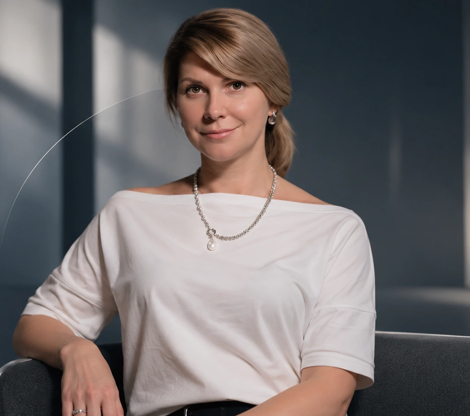

Организационный дизайн
Целевые структуры, новые роли, модели взаимодействия.

Трансформация коммерческих организаций в FMCG: оргдизайн, изменения, лидерские команды.
Проектирую оргструктуры и провожу изменения в коммерческих функциях — от целевой модели и новых ролей до закрепления новых способов работы.
20+ лет опыта в FMCG, включая 16 лет в коммерции, 3 года в Business Development и 3 года в HR-партнёрстве. Говорю на языке продаж, дистрибуции и P&L.
Оптимизация численности штата
Рост продаж
Сокращение расходов бюджета
Рост покрытия магазинов в АКБ
Экономия при изменении системы скидок
Число дистрибьюторов
Новых ролей
Выпускников школы коммерции
Целевые структуры, новые роли, модели взаимодействия.
Сопровождение трансформаций, закрепление новых способов работы.
Лидерские команды, кадровый резерв, эффективность.
Компетенции под бизнес-задачи, обучение с ИИ-практикой.
Реорганизация коммерческой функции, новые роли, развитие лидерства и корпоративная школа коммерции.
Стратегия дистрибуции, система скидок, управление инвестициями и KPI.
Команда 40 человек.
Команда 20 человек.
5 человек в подчинении.
Санкт-Петербург.
Переговоры с ключевыми сетями по направлению бытовых клеев.
Спроектировала целевую структуру и 10 новых ролей, запустила дистанционное управление продажами. Численность штата оптимизирована на 39%, покрытие выросло с 2 до 25 тысяч магазинов, расходы бюджета сократились на 30% при росте продаж на 12%.
Разработала и защитила стратегию управления сетью: число дистрибьюторов сократилось с 96 до 20. Изменение системы скидок обеспечило экономию $5 млн без потери представленности брендов. Создала систему управления дистрибьюторскими инвестициями и единую систему KPI коммерческой функции.
Запустила школу с нуля, объединив офлайн- и онлайн-обучение. Более 50 выпускников.
Саратовский государственный технический университет, 2001 — инженер-технолог.
Английский — Intermediate.
Москва, Россия